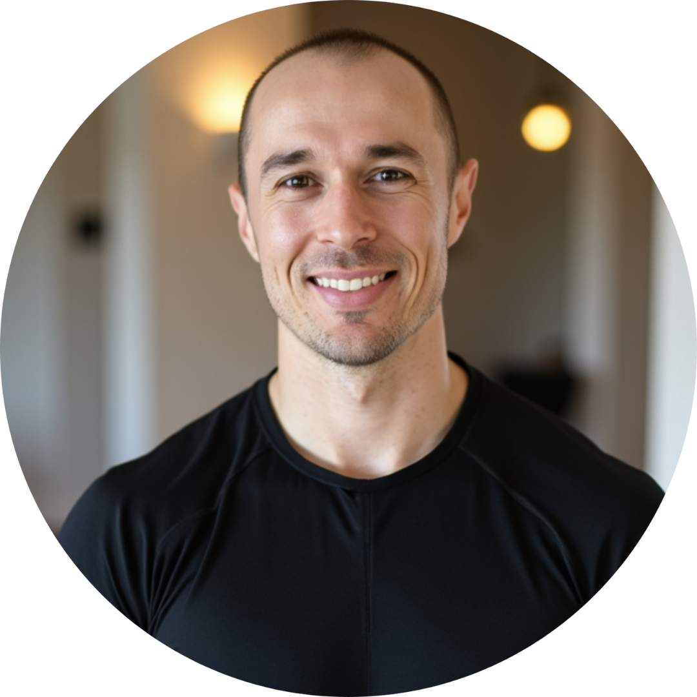

I didn’t come to this work through a textbook. I came through my own body.
A decade ago, I was a biologist with a background in human physiology — and I was sick. An autoimmune condition was quietly dismantling my health. Despite everything I knew professionally, I was exhausted, inflamed, and running at a fraction of my capacity. Conventional medicine offered management. I wanted answers.
What followed was years of deep work — applying the same precision I’d used in research to my own biology. I rebuilt myself from the ground up. Not through willpower or a new supplement stack. Through data, root-cause clarity, and a system that actually matched the demands I was placing on my body.
That transformation became Second Prime. Over the last 10 years, I’ve worked with more than 1,000 clients — more than 500 of them founders, executives, and high-output operators. The pattern I see is always the same: disciplined, intelligent people who are putting in real effort and still not getting the results they deserve. Not because they’re doing something wrong, but because no one has given them a system built for them.
Standard medicine flags crisis. It doesn’t build performance. Generic fitness is designed for average demands, not yours. And the wellness industry? It’s built to sell products, not solve root causes.
Second Prime is different. It’s a precision-engineered, data-driven system — built for the highest-output version of you. One that treats your body like the asset it is.
This document will walk you through exactly what we do, how we do it, and whether this is the right fit. Read it carefully. Come to our call prepared.
I’m looking forward to talking with you.
— Andrew Martin
Founder & Biologist, Second Prime